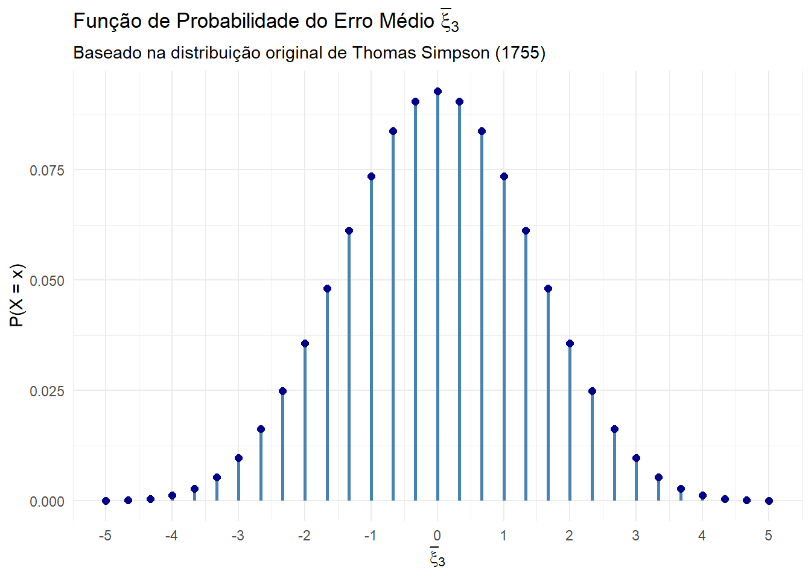

6 Convergência de variáveis aleatórias
Seja \(X_1,\ldots,X_n\) uma amostra de variáveis aleatórias (dizemos que esta amostra tem tamanho \(n\)). Qualquer função desta amostra é denominada estatística. Exemplos de estatística são a média amostral, variância amostral, mediana amostral etc. Por serem funções de variáveis aleatórias, qualquer estatística também será uma variável aleatória. Seja \(T_n\) uma estatística baseada em \(X_1,\ldots,X_n\). A intuição nos diz que o aumento de \(n\) deve trazer alguma vantagem. Estamos então interessados em entender o comportamento de \(P(T_n<t)\) quando \(n\rightarrow \infty\).
A discussão acima é apenas um exemplo da importância do estudo de convergência de variáveis aleatórias, que é o tópico desse capítulo.
Neste tópico iremos discutir:
a noção de limite tradicional
a noção de limite em probabilidade
a noção de limite em distribuição
a Lei Fraca de Tchebychev
o Teorema Central do Limite para o caso de variáveis independentes e identicamente distribúidas.
6.1 A noção de limite tradicional
Dizemos que \(L\) é o limite de \(f(x)\) quando \(x\) se aproxima de \(x_0\) se, para todo \(\varepsilon>0\), existe \(\delta>0\) tal que
se \(0<|x-x_0|<\delta\Rightarrow |f(x)−L|<\varepsilon\)
A notação \[\lim_{x\rightarrow x_0}f(x)=L\] é a mais usual em livros de cálculo mas nos será mais conveniente escrever \(f(x)\rightarrow L\) quando \(x\rightarrow x_0\) (lê-se \(f(x)\) tende a \(L\) quando \(x\) tende a \(x_0\)).
Estamos interessados no caso em que \(x \rightarrow \infty\). Dizemos que \(f(x) \rightarrow L\) quando \(x \rightarrow \infty\) se, para todo \(\epsilon > 0\), existe \(x_0\) tal que:\[\text{se } x > x_0 \Rightarrow |f(x) - L| < \epsilon\]
Example 6.1 Vamos mostrar que \(f(x)=1/x\) tende a zero quando \(x\rightarrow\infty\).
Isto implica em mostrar que, para qualquer \(\varepsilon>0\) deve existir \(x_0\) tal que, para qualquer \(x>x_0\)
\[\left|\frac{1}{x}\right|<\varepsilon\].
Note que, para qualquer \(x_0>0\) arbitrário, é verdade que
\[x>x_0\Rightarrow \frac{1}{x}<\frac{1}{x_0},\] Logo, para qualquer \(\varepsilon>0\), podemos fazer \(x_0=\varepsilon^{-1}\) de modo que
\[x>x_0\Rightarrow \left|\frac{1}{x}-0\right|<\frac{1}{x_0}=\varepsilon,\] o que implica que o limite de \(1/x\) quando \(x\rightarrow\infty\) é igual a 0.
Theorem 6.1 Teorema do Confronto (ou do Sanduíche)Suponha que, para todo \(x\) suficientemente grande, tenhamos:\[0 \leq |f(x)| \leq g(x)\]Se \(\lim_{x\rightarrow\infty} g(x) = 0\), então:\[\lim_{x\rightarrow\infty} f(x) = 0\]
Exercise 6.1 Limite de \(1/x^2\)
- Se \(x > 1\), mostre que \(x^2 > x\).
- Utilizando o resultado do item (a) e o Teorema do Confronto, prove que: \[\lim_{x \to \infty} \frac{1}{x^2} = 0\] (Dica: Lembre-se que \(0 < \frac{1}{x^2} < \frac{1}{x}\) para \(x > 1\)).
Exercise 6.2 Limite de função racional
- Se \(x > 1\), mostre que \(x^2 + 1 > x\).
- Utilizando o resultado do item (a) e o Teorema do Confronto, mostre que: \[\frac{x}{x^2 + 1} \to 0 \text{ quando } x \to \infty\]
Exercise 6.3 Limite da função exponencial
Seja \(0 < a < 1\). Mostre que: \[a^x \to 0 \text{ quando } x \to \infty\] (Dica: Escreva \(a = \frac{1}{1+b}\) onde \(b > 0\) e utilize a desigualdade de Bernoulli \((1+b)^x > 1 + xb\) para aplicar o Teorema do Confronto).
6.2 Convergência em probabilidade
Sejam \(X_1,X_2,\ldots\) uma sequência de variáveis aleatórias definidas no mesmo espaço de probabilidade da variável aleatória \(X\). Dizemos que \(X_n\) converge em probabilidade para a variável aleatória \(X\) quando \(n\rightarrow\infty\) se para todo \(\varepsilon>0\)
\[P(|X_n−X|\geq \varepsilon)\rightarrow 0,\] quando \(n\rightarrow\infty\). Neste caso, utilizamos a notação \(X_n\stackrel{P}{\rightarrow}X\) quando \(n\rightarrow \infty\)(lê-se \(X_n\) converge em probabilidade para \(X\) quando \(n\) tende ao infinito).
Note que se \(X_n\) converge em probabilidade para \(X\), então a probabilidade do evento \(X_n\in(X−\varepsilon,X+\varepsilon)\) ocorrer tende a 1. De modo equivalente, podemos dizer que \(X_n\stackrel{P}{\rightarrow}X\) se
\[P(|X_n−X|<\varepsilon)\rightarrow1,\] quando \(n\rightarrow\infty\).
Example 6.2 Sejam \(X_1,X_2,\ldots\) uma sequência de variáveis aleatórias com \(X_n\sim\hbox{Bernoulli}(1/n)\). Intuitivamente, a probabilidade de sucesso será cada vez menor, até chegar ao ponto no qual apenas o fracesso será possível. Isto nos leva a considerar que \(X_n\stackrel{P}{\rightarrow}0\) quando \(n\rightarrow\infty\). Vamos mostrar que isso é verdade.
Primeiro, fixe um valor qualquer para \(\varepsilon>0\). Note que
\[|X_n−0|\geq \varepsilon\equiv|X_n|\geq \varepsilon>0.\] Ora, \(|Xn|=Xn\), pois a variávei é sempre não negativa. Além disso, \(X_n\geq \varepsilon>0\) implica que \(X_n>0\), e por sua vez, apenas \(X_n=1\) é possível. Assim
\[P(|X_n−0|\geq \varepsilon)=P(X_n>0)=P(X_n=1)=\frac{1}{n}\rightarrow 0,\] quando \(n\rightarrow\infty\). Portanto, \(X_n\stackrel{P}{\rightarrow}0\).
Example 6.3 Sejam \(X_1,X_2,\ldots\) uma sequência de variáveis aleatórias com distribuição Uniforme(0,\(\theta\)). No problema de inferência estatística, \(\theta\) é desconhecido. Considere a estatística
\[T_n=\hbox{max}\{X_1,\ldots,X_n\}.\] Vamos mostrar que \(T_n\stackrel{P}{\rightarrow}\theta\). Primeiro, lembremos que
\[|X−a|>b\Rightarrow −b>X−a \hbox{ ou } b<X−a,\] e que \[Tn<\theta\Rightarrow X_1<\theta,\ldots ,X_n<\theta.\]
Então, para qualquer \(\varepsilon>0\),
\[\begin{align}P(|T_n−\theta|>\varepsilon)&=P(T_n−\theta>\varepsilon)+P(T_n−\theta<−\varepsilon)\\&=P(T_n−\theta<−\varepsilon)=P(T_n<−\varepsilon+\theta)\\& =P(X_1<−\varepsilon+\theta,\ldots,X_n<−\varepsilon+\theta)\\ &=\prod_{i=1}^n P(X_i<−\varepsilon+\theta)=F(-\varepsilon+θ)^n=\left(\frac{−\varepsilon+\theta}{\theta}\right)^n\\&=\left(1-\frac{\varepsilon}{\theta}\right)^n\rightarrow 0\end{align}\] quando \(n\rightarrow\infty\). Portanto, \(T_n\stackrel{P}{\rightarrow}\theta\).
Exercise 6.4 Seja \(X_1,X_2,\ldots,\) uma sequência de variáveis aleatórias independentes e identicamente distribuídas, com \(X_n\leq θ\) para todo \(n\geq 1\). Seja \(T_n=\max\{X_1,…,X_n\}.\) Mostre que \(T_n\stackrel{P}{\rightarrow}\theta\) quando \(n\rightarrow\infty\). Esse resultado mostra que o máximo amostral é uma estatística consistente para estimar \(\theta\).
Theorem 6.2 Se \(X_n\stackrel{P}{\rightarrow}b\), onde \(b\) é constante e se \(g\) é uma função real contínua em \(b\), então então \(g(X_n)\stackrel{P}{\rightarrow}g(b)\).
6.3 Lei Fraca dos Grandes Números
Foi John Graunt, um mercador de tecidos, que em 1662 publicou o primeiro trabalho utilizando a proporção amostral como uma probabilidade. A ideia funcionou perfeitamente, mas não se sabia o motivo até a publicação do Ars Conjectandi, de Jacob Bernoulli, em 1713. Ao terminar sua demonstração, ele diz: “Considero que não fiz muita coisa, somente demonstrei o que é conhecimento de todos”. Hoje, seu resultado é um dentro de uma coleção de teoremas denominada Leis dos Grandes Números.
Theorem 6.3 Lei (Fraca) dos Grandes Números de Jacob Bernoulli. Sejam \(X_1,X_2,\ldots\) uma sequência de variáveis aleatórias independentes com \(X_i\sim\hbox{Bernoulli}(p)\). Então
\[\bar{X}_n=\sum_{i=1}^n \frac{X_i}{n}\stackrel{P}{\rightarrow}{p}\] quando \(n\rightarrow\infty\).
Em resumo, uma Lei dos Grandes Números é um teorema sobre a convergência de \(\bar{X}_n\) quando \(n\rightarrow\infty\). Se o limite for em probabilidade, a lei é denominada fraca (existem as leis fortes, mas não serão tratadas nesse curso). Foi Simeón Poisson (1837) que cunhou o termo Lei dos Grandes Números e foi o primeiro a generalizar a lei para o caso no qual a sequência as variáveis não era identicamente distribuída. Contudo, esse resultado é mais conhecido como Lei Fraca de Chebyshev, devido à sua demonstração mais simples em 1867. Antes de introduzir essa lei, vamos mostrar o resultado-chave desenvolvido por Chebyshev.
Theorem 6.4 Desigualdade de Chebyshev Seja \(X\) uma variável aleatória com média \(\mu\) e variância \(\sigma^2\). Então, para qualquer \(\varepsilon>0\), \[P(|X-\mu|\geq \varepsilon)\leq \frac{\sigma^2}{\varepsilon^2}.\]
Vamos fazer a prova da desigualdade. Sem perda de generalidade, assuma que ela é contínua. Então, para qualquer \(\varepsilon>0\),
\[\sigma^2=\int_{\mathbb{R}}(x-\mu)^2f(x)dx\geq \int_{\{x:|x-\mu|\geq \varepsilon\}}(x-\mu)^2f(x)dx\geq \varepsilon^2P(|X−\mu|\geq \varepsilon)\] logo, \[P(|X-\mu|\geq \varepsilon)\leq \frac{\sigma^2}{\varepsilon^2}.\]
Agora vamos enunciar formalmente a Lei Fraca de Chebyshev.
Theorem 6.5 Lei Fraca de Chebyshev. Sejam \(X_1,X_2,\ldots\) uma sequência de variáveis aleatórias não correlacionadas com \(E(X_n)=\mu\) e \(Var(X_n)<c<\infty\). Então
\[\bar{X}_n=\sum_{i=1}^n\frac{X_i}{n}\stackrel{P}{\rightarrow}\mu,\] quando \(n\rightarrow\infty\).
Vamos demonstrar a Lei Fraca de Chebyshev. Observe que, pela desigualdade de Chebyshev,
\[P(|\bar{X}_n-\mu|\geq\varepsilon)\leq \frac{Var(\bar{X}_n)}{\varepsilon^2}=\frac{\sum_{i=1}^nVar(X_i)}{n^2\varepsilon^2}<\frac{c}{n\varepsilon^2}\rightarrow 0\] quando \(n\rightarrow\infty\), o que prova que \(\bar{X}_n\stackrel{P}{\rightarrow}\mu\).
Example 6.4 Seja \(X_1, X_2, \dots,\) uma sequência de variáveis aleatórias independentes que seguem uma distribuição Poisson\((2)\). Considere a sequência \(\bar{X}_n\) definida por
\[\bar{X}_n=\frac{X_1+\cdots+X_n}{n}\] Como \(E(X_i)=2\), pela Lei Fraca de Chebyshev teremos que \(\bar{X}\stackrel{P}{\to}2\) quando \(n\to\infty\).
Exercise 6.5 Seja \(X_1, X_2, \dots,\) uma sequência de variáveis aleatórias independentes que seguem uma distribuição Uniforme\((0, 2)\). Considere a sequência \(Y_n\) definida por
\[Y_n = \frac{X_1^2 + X_2^2 + \dots + X_n^2}{n}\]
Determine para qual valor constante \(c\) a sequência \(Y_n\) converge em probabilidade quando \(n \to \infty\).
Exercise 6.6 Seja \(X_1,X_2,\ldots\) uma sequencia de variáveis aleatórias com distribuição Bernoulli(\(p\)). Definimos a sequência:\[W_n = \frac{1}{n} \sum_{i=1}^n X_i^2\]
Encontre o limite em probabilidade de \(W_n\) quando \(n \to \infty\).
Exercise 6.7 Seja \(X_1, X_2, \dots,\) uma sequência de variáveis independentes e estritamente positivas, onde \(E(\log(X_i)) = L\). Considere a média geométrica
\[G_n = \sqrt[n]{X_1 \cdot X_2 \cdot \dots \cdot X_n}\]
Mostre que \(G_n\) converge em probabilidade para \(e^L\).
Exercise 6.8 Seja \(X_1, X_2, \dots,\) uma sequência de variáveis aleatórias independentes e identicamente distribuídas com uma função de distribuição \(F(x) = P(X \leq x)\). A Função de Distribuição Empírica é definida por
\[\hat{F}_n(x) = \frac{1}{n} \sum_{i=1}^n I_{(-\infty,x]}(X_i),\]
Fixe um valor real qualquer \(x\). Defina uma nova variável aleatória \(Y_i = I_{(-\infty,x)}(X_i)\). Determine a distribuição de \(Y_i\) e calcule sua esperança \(E(Y_i)\).
Utilize a Lei Fraca dos Grandes Números para mostrar que, para qualquer valor fixo de \(x\):
\[\hat{F}_n(x) \xrightarrow{P} F(x) \quad \text{quando } n \to \infty\]
6.4 Convergência em distribuição
Definition 6.1 Dizemos que a sequência de variáveis aleatórias \(X_1,X_2,\ldots\) converge para \(X\) em distribuição se
\[\lim_{n\to\infty}F_{X_n}(x)=F_X(x)\] para todo \(x\). Neste caso, \(X\) é denominada limite em distribuição de \(X_n\).
Notação: \(X_n\stackrel{D}{\to}X\) quando \(n\to\infty\).
É importante ressaltar que o limite pode ser calculado em outras funções que caracterizam a distribuição. Por exemplo, também diremos que \(X_n\stackrel{D}{\to}X\) se
\(\lim_{n\to\infty}P(X_n=x)=P(X=x)\) (caso discreto)
\(\lim_{n\to\infty}f_{X_n}(x)=f_X(x)\) (caso contínuo)
\(\lim_{n\to\infty}M_{X_n}(t)=M_X(t)\) (quando existe a função geratriz de momentos).
Example 6.5 Seja \(X_1,X_2,\ldots\) uma sequência de variáveis aleatórias independentes e identicamente distribuídas, com \(X_1\sim\hbox{Uniforme}(0,1)\). Seja
\[Y_n=\min\{X_1,\ldots,X_n\}.\]
Vamos encontrar o limite em distribuição de \(Z_n=nY_n\). Primeiro, lembre que
\[I_{(-\infty,x_1)}(w)I_{(-\infty,x_2)}(w)=I_{(-\infty,\min\{x_1,x_2\})}(w)=I_{(-\infty,y_2)}(w)\] e, de maneira geral \[\prod_{i=1^n}I_{(-\infty,x_i)}(w)=I_{(-\infty,y_n)}(w)\] Isso implica que
\[w< x_1,\ldots,w< x_n\Leftrightarrow w< y_n\] Como
\[\begin{align}P(Z_n\leq z)&=P(nY_n\leq z)=P\left(Y_n\leq\frac{z}{n}\right)\\&=1-P\left(Y_n>\frac{z}{n}\right)\\&=1-P\left(X_1>\frac{z}{n},\ldots,X_n>\frac{z}{n}\right)\\&=1-\prod_{i=1}^nP\left(X_i>\frac{z}{n}\right)\\&=1-\left[1-\frac{z}{n}\right]^n\end{align}\] e, como
\[\lim_{n\rightarrow\infty} P(Z_n\leq z)=1-\lim_{n\rightarrow\infty}\left(1-\frac{z}{n}\right)^n=1-e^{-z},\] temos que \(Z_n\stackrel{D}{\to}Z\) quando \(n\to\infty\), onde \(Z\sim\hbox{Exponencial}(1)\).
Theorem 6.6 (Slutsky) Sejam \(\{X_n\}\) e \(\{Y_n\}\) duas sequências de variáveis aleatórias. Suponha que, quando \(X_n \xrightarrow{D} X\) e \(Y_n \xrightarrow{P} c\) \(n \to \infty\). Então, as seguintes convergências em distribuição são verdadeiras:
Soma: \(X_n + Y_n \xrightarrow{d} X + c\)
Produto: \(X_n \cdot Y_n \xrightarrow{d} cX\)
Divisão: \(\frac{X_n}{Y_n} \xrightarrow{d} \frac{X}{c}\), desde que \(c \neq 0\).
6.5 Teorema Central do Limite
Os astrônomos perceberam cedo que as medições feitas sobre o mesmo corpo celeste geralmente apresentavam erros. Em uma linguagem moderna, eles acreditavam que a verdadeira medida era \(\theta\), enquanto que a medida observada \(x_i\) era contaminada por um erro \(\xi_i\), em uma relação aditiva, ou seja
\[x_i=\theta+\xi_i.\] Thomas Simpson escreveu em 1755 “A vantagem de calcular a média na astronomia prática”. Nesse trabalho, ele assumiu que os erros \(\xi_i\) deviam (a) ter natureza aleatória, (b) ser simétricos em torno de zero e (c) ter uma moda em 0, com as probabilidades decaindo à medida que nos afastamos da moda. Sua distribuição de erro era
\[\begin{array}{c|ccccccccccc}\hline \xi & -5 & -4 & -3 & -2 & -1 & 0 & 1 & 2 & 3 & 4 & 5 \\ \hline P(\xi)& \frac{1}{36} & \frac{2}{36} & \frac{3}{36} &\frac{4}{36} & \frac{5}{36} & \frac{6}{36}&\frac{5}{36}&\frac{4}{36}&\frac{3}{36}&\frac{2}{36}&\frac{1}{36}\\ \hline \end{array}\]
Assumindo essa lei, ele mostrou que calcular a média de triplicatas da medição diminuiria o erro. Atualmente, seria algo como
\[\bar{x}_3=\theta+\bar{\xi_3}\]
Abaixo, apresentamos o gráfico da função de probabilidade de \(\bar{\xi}_3\). Note, por exemplo, que a probabilidade de ocorrer um erro igual a -5 ou 5 é significativamente menor se considerarmos \(\bar{x}_3\).
Note que, embora fundamentada, a escolha de Simpson para a distribuição dos erros foi arbitrária. De modo não relacionado, De Moivre, na tentativa de calcular \(P(X=x)\) quando \(X\sim\hbox{Binomial}(n,1/2)\) e \(n\) é grande, publica em 1733 a expressão
\[P(X=x)\approx\frac{2}{\sqrt{2\pi n}}e^{-\frac{2}{n}\left(x-\frac{n}{2}\right)^2},\] algo que identificaríamos hoje em dia com a densidade da Normal\((n/2, n/4)\). Voltando ao problema dos erros, em 1805 é publicado o método dos mínimos quadrados, com o qual prova-se que o valor de \(\theta\) que minimiza \(\sum_{i=1}^n \xi_i^2\) é, de fato \(\bar{x}_n\), o que corrobora o trabalho de Simpson. Com a introdução do Método dos Mínimos Quadrados, provou-se que o valor de \(\theta\) que minimiza a soma dos quadrados dos erros é a média aritmética \(\bar{x}_n\). Gauss, ao unir essas pontas, demonstrou que se os erros seguem a distribuição normal, a média não é apenas uma escolha intuitiva, mas o estimador que maximiza a probabilidade dos dados observados.
Contudo, a escolha da distribuição dos erros ainda parecia depender de suposições específicas até o trabalho de Laplace em 1812 (Théorie Analytique des Probabilités). Nele, Laplace demonstrou que a distribuição da média de um grande número de erros independentes tende à distribuição normal, independentemente da forma da distribuição original dos erros. Esse resultado, que hoje conhecemos como Teorema Central do Limite, forneceu a base teórica definitiva para o uso da média aritmética e da curva normal na ciência.
Theorem 6.7 Teorema Central do Limite. Sejam \(X_1,X_2\ldots,\) uma sequência de variáveis aleatórias independentes e identicamente distribuídas com \(E(X_1)=\mu\) e \(Var(X_1)=\sigma^2\). Então
\[Z_n=\sqrt{n}\frac{\bar{X}_n-\mu}{\sigma}\stackrel{D}{\rightarrow}\hbox{Normal}(0,1),\] quando \(n\rightarrow\infty\).
É importante ressaltar que, assim como ocorre com as Leis dos Grandes Números, existe uma coleção de resultados intitulados “Teorema Central do Limite”. O que difere esses teoremas são as condições impostas sobre a sequência \(X_1, X_2, \ldots\), permitindo, em versões mais generalizadas, que as variáveis tenham distribuições distintas ou até mesmo algum grau de dependência. Abaixo, demonstramos o teorema enunciado.
Example 6.6 Demonstração do Teorema Central do Limite. Vamos fazer a demonstração para o caso particular, quando existe a função geratriz de momentos (o caso geral possui uma demonstração similar, substituindo a função geratriz pela função característica, mas sua definição está além do escopo desse curso).
Antes de prosseguir, lembremos que uma função \(g(x)\) contínua com pelo menos duas derivadas definidas em \(x_0\) pode escrita como
\[g(x)= g(x_0)+(x-x_0)g'(x_0)+\frac{(x-x_0)^2}{2}g''(x_0)+o((x-x_0)^2).\] \(o(z)\) representa um termo que converge para zero mais rápido do que \(z\). Para uma variável aleatória \(Y\) qualquer que possui função geratriz de momentos, é verdade que:
- \(M_Y(0)=1\)
2 \(M_Y'(0)=E(Y)\)
- \(M_Y''(0)=E(Y^2)\).
Portanto, a aproximação de \(M_Y(t)\) em torno de zero é \[M_Y(t)= 1+tE(Y)+\frac{t^2}{2}E(Y^2)+ o(t^2).\]
Agora, considere a sequência \(X_1,X_2\ldots,\) enunciada no Teorema Central do Limite. Sem perda de generalidade, assuma que \(E(X_i)=0\). A função geratriz de momentos de \(Z_n\) é
\[\begin{align}M_{Z_n}(t)&=E\left(e^{\frac{\sqrt{n}\bar{X}_n}{\sigma}t}\right)=E\left(e^{\frac{\sqrt{n}}{n\sigma}t\sum_{i=1}^n X_i}\right)=E\left(\prod_{i=1}^ne^{\frac{\sqrt{n}}{n\sigma}t X_i}\right)\\&=\prod_{i=1}^nE\left(e^{\frac{t}{\sigma\sqrt{n}} X_i}\right)=\prod_{i=1}^nM_{X_i}\left(\frac{t}{\sigma\sqrt{n}}\right)\\&=\left[M_{X}\left(\frac{t}{\sigma\sqrt{n}}\right)\right]^n\end{align}\] Para \(M_X(s)\) em torno de 0, teremos a expansão
\[\begin{align}M_X(s)= 1+\frac{s^2}{2}\sigma^2+ o(s^2),\end{align}\] e substituindo \(s\) por \(t/(\sigma/\sqrt{n})\), teremos
\[\begin{align}M_X\left(\frac{t}{\sigma\sqrt{n}}\right)= 1+\frac{t^2}{2n}+ o\left(\frac{t^2}{n\sigma^2}\right),\end{align}\] onde o termo \(o(t^2/n\sigma^2)\) pode ser negligenciado. Teremos então
\[M_{Z_n}(t)=\left[1+ \frac{t^2}{2n}\right]^n\]
Note que \[\lim_{n\to\infty}\log M_{Z_n}(t)=\lim_{n\to\infty}n\log\left(1+\frac{t^2}{2n}\right)\] como o logaritmo acima tende a 0, podemos reescrever limite como
\[\lim_{n\to\infty}\log M_{Z_n}(t)=\lim_{n\to\infty}\frac{\log\left(1+\frac{t^2}{2n}\right)}{1/n}\] e aplicar a regra de l’Hôpital:
\[\begin{align}\lim_{n\to\infty}\log M_{Z_n}(t)&=\lim_{n\to\infty}\frac{\log\left(1+\frac{t^2}{2n}\right)}{1/n}\\&=\lim_{n\to\infty}\frac{\frac{d}{dn}\log\left(1+\frac{t^2}{2n}\right)}{\frac{d}{dn}1/n}\\&=\lim_{n\to\infty}\frac{\left(1+\frac{t^2}{2n}\right)^{-1}(-\frac{t^2}{2n^2})}{-1/n^2}\\&=\frac{t^2}{2}\lim_{n\to\infty}\left(1+\frac{t^2}{2n}\right)^{-1}=\frac{t^2}{2}.\end{align}\] Portanto,
\[\lim_{n\to\infty }M_{Z_n}=e^{t^2/2},\] o que implica que o limite em distribuição de \(Z_n\) é a distribuição normal padrão.
Importante. O Teorema Central do Limite é muito útil para apresentar uma distribuição aproximada pois
\[Z_n=\sqrt{n}\frac{\bar{X}_n-\mu}{\sigma}\stackrel{D}{\rightarrow}\hbox{Normal}(0,1),\]
intuitivamente implica que, para \(n\) grande o suficiente,
\[\bar{X}\approx \hbox{Normal}\left(\mu,\frac{\sigma^2}{n}\right).\]
Example 6.7 Sejam \(X_1,X_2,\ldots,\) variáveis aleatórias independentes com distribuição Bernoulli(\(p\)). Como \(E(X_1)=p\) e \(Var(X_1)=p(1-p)\), teremos que
\[Z_n=\sqrt{n}\frac{\bar{X}_n-p}{\sqrt{p(1-p)}}\stackrel{D}{\to}N(0,1)\] quando \(n\to\infty\). Isto implica que \[\bar{X}_n\approx \hbox{Normal}\left(p,\frac{p(1-p)}{n}\right).\]
Exercise 6.9 Considere a distribuição do erro de Simpson, dada abaixo:
\[\begin{array}{c|ccccccccccc}\hline \xi & -5 & -4 & -3 & -2 & -1 & 0 & 1 & 2 & 3 & 4 & 5 \\ \hline P(\xi)& \frac{1}{36} & \frac{2}{36} & \frac{3}{36} &\frac{4}{36} & \frac{5}{36} & \frac{6}{36}&\frac{5}{36}&\frac{4}{36}&\frac{3}{36}&\frac{2}{36}&\frac{1}{36}\\ \hline \end{array}\]
Nesse trabalho ele mostrou que utilizar \(\bar{x}_3\) era vantajoso porque a distribuição do erro \(\bar{\xi}_3\) era mais concentrada em torno de zero e se espalhava menos.
Qual seria a distribuição aproximada de \(\bar{\xi}_n\), para \(n\) suficientemente grande?
Example 6.8 Considere novamente a sequÊncia \(X_1,X_2\ldots,\) de variáveis aleatórias independentes com distribuição Bernoulli(\(p\)), onde foi mostrado que, para \(n\) suficientemente grande,
\[\bar{X}_n\approx \hbox{Normal}\left(p,\frac{p(1-p)}{n}\right).\]
Embora não exista nada de errado com esse resultado, sob o ponto de vista da inferência estatística seria mais conveniente que a variância não tivesse \(p\). Nos textos básicos inferência, isso é feito simplesmente trocando \(p\) por \(\hat{p}=\bar{X}_n\) na variância, obtendo
\[\bar{X}_n\approx \hbox{Normal}\left(p,\frac{\hat{p}(1-\hat{p})}{n}\right).\]
Essa conta não fazer sentido, pois a própria variável se torna um parâmetro. Vamos explicar porque esse passo faz sentido para grandes amostras utilizando o Teorema Central do Limite e o Teorema de Slutsky. Primeiro, sabemos que
\[Z_n=\sqrt{n}\frac{\bar{X}_n-p}{\sqrt{p(1-p)}}\stackrel{D}{\to}N(0,1)\]
Também, já mostramos que \(\bar{X}_n\stackrel{P}{\to}p\), o que implica que
\[\bar{X}_n(1-\bar{X}_n)\stackrel{P}{\to}p(1-p).\] Considere a variável
\[\begin{align}W_n&=\sqrt{n}\frac{\bar{X}_n-p}{\sqrt{\bar{X}_n(1-\bar{X}_n)}}=\frac{\bar{X}_n-p}{\sqrt{p(1-p)}}\sqrt{\frac{p(1-p)}{\bar{X}_n(1-\bar{X}_n)}}\\&=Z_n\sqrt{\frac{p(1-p)}{\bar{X}_n(1-\bar{X}_n)}}.\end{align}\] Como \(Z_n\stackrel{D}{\to}N(0,1)\) e
\[\sqrt{\frac{p(1-p)}{\bar{X}_n(1-\bar{X}_n)}}\stackrel{P}{\to}1,\] pelo Teorema de Slutsky,
\[W_n\stackrel{D}{\to}Z_n\cdot 1=Z_n\sim N(0,1).\]
Deste modo, para \(n\) suficientemente grande, \(W_n\) e \(Z_n\) tem a mesma distribuição, o que justifica a troca de \(p\) por \(\bar{X}_n\) na variância.
Exercise 6.10 Sejam \(X_1,X_2,\ldots\) variáveis aleatórias independentes mesma distribuição e \(E(X_i)=\mu\), \(Var(X_i)=\sigma^2\).
- Utilize o Teorema Central do Limite para encontrar o limite em distribuição de
\[Z_n=\sqrt{n}\frac{\bar{X}_n-\mu}{\sigma}.\]
Seja \[S^2_n=\frac{1}{n}\sum_{i=1}^n(X_i-\bar{X}_n)^2=\frac{1}{n}\sum_{i=1}^nX_i^2-\bar{X}_n^2.\] Utilizando a Lei Fraca dos Grandes Números, encontre o limite em probabilidade de \(S_n^2\).
Utilizando o Teorema de Slutsky, encontre a distribuição limite de
\[W_n=\sqrt{n}\frac{\bar{X}_n-\mu}{S_n},\] onde \(S_n=\sqrt{S^2_n}\). (Note. Esse resultado é utilizado para fazer inferências sobre \(\mu\) sem ter que lidar com \(\sigma^2\)).
Exercise 6.11 Sejam \(X_1,X_2,\ldots\) variáveis aleatórias independentes com distribuição Poisson(\(\lambda\))
- Utilizando o Teorema Central do Limite, encontre a distribuição limite de
\[Z_n=\sqrt{\frac{n}{\lambda}}\left(\bar{X}_n-\lambda\right).\]
- Utilizando o Teorema de Slutsky, encontre a distribuição limite de
\[Z_n=\sqrt{\frac{n}{\bar{X}_n}}\left(\bar{X}_n-\lambda\right).\] (Nota. Esse resultado é utilizado para fazer inferências sobre \(\lambda\) sem que o mesmo apareça na variância).
Exercise 6.14 Sejam \(X_1, X_2, \ldots\) variáveis aleatórias independentes com distribuição Exponencial\((\lambda)\), com função densidade dada por
\[f(x)=\lambda e^{-\lambda x}I_{(0,\infty)}(x).\]
Utilize o Teorema Central do Limite para encontrar a distribuição limite de \[Z_n = \sqrt{n} \lambda \left( \bar{X}_n - \frac{1}{\lambda} \right)\]
Utilizando a Lei Fraca dos Grandes Números, determine o limite em probabilidade de
\[Y_n = \frac{1}{\bar{X}_n}\]
- Combine os resultados anteriores para encontrar a distribuição limite de:
\[W_n = \frac{\sqrt{n} \left( \bar{X}_n - \frac{1}{\lambda} \right)}{\bar{X}_n}\]
(Nota: Observe que, assim como nos exercícios anteriores, o parâmetro \(\lambda\) “sumiu” do denominador, permitindo que utilizemos apenas a média amostral \(\bar{X}_n\) para estimar a variabilidade da estimativa).
6.6 Exercícios de fixação
Exercise 6.12 Seja \(X_1, X_2, \ldots\) uma sequência de variáveis aleatórias i.i.d. com distribuição Exponencial(\(\lambda\)). Sabemos que \(E(X_i) = 1/\lambda\) e \(Var(X_i) = 1/\lambda^2\). Defina a estatística:\[K_n = \frac{1}{n} \sum_{i=1}^n \sqrt{X_i}\] Considerando que \(E(\sqrt{X_i}) = \Gamma(3/2)/\sqrt{\lambda} = \frac{\sqrt{\pi}}{2\sqrt{\lambda}}\), determine para qual valor constante \(c\) a sequência \(K_n\) converge em probabilidade quando \(n \to \infty\). Justifique citando a Lei Fraca utilizada.
Exercise 6.13 Considere uma sequência \(X_1, X_2, \ldots\) de variáveis aleatórias independentes com distribuição Qui-quadrado com \(k=1\) grau de liberdade (\(X_i \sim \chi^2_1\)). Sabe-se que \(E(X_i) = 1\) e \(Var(X_i) = 2\).
Pelo TCL, qual a distribuição limite de \(Z_n = \sqrt{n} \frac{(\bar{X}_n - 1)}{\sqrt{2}}\)?
Mostre que \(\bar{X}_n^2 \xrightarrow{P} 1\).
Utilizando o Teorema de Slutsky, encontre a distribuição limite de:\[W_n = \sqrt{n} \frac{(\bar{X}_n - 1)}{\sqrt{2}\bar{X}_n}\]